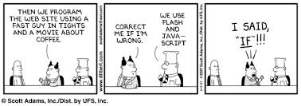

Why JavaScript...
JavaScript is essentially the language of the web browser (and that would be any flavor of web browser) and it has matured into a language that is also mobility and server side (vs. client side) web applications. It has some strong points such as functions, dynamic objects and the expressive object literal notation. From what I understand one of it's core challenges is that it based on a global variables model. Of mixed reception would be its protoypal inheritance wherein an object can inherit properties directly from other objects.
It's a fairly "accessible" language - one that does not require extensive knowledge of the subject in order to successfully execute it. That the layperson can interact with it was, it would seem, part of the reason season devlopers often eschewed it. Which is surprising giving JavaScript's origins having come from the masterminds behind Netscape (for those of you too young to remember Netscape well know that it has everything to do with what you think of as "the web" today.) That alone should have made it an early adoption for the techorati.
It's also rather "lightweight" making it ideal for apps - especially on mobile devices. With the help of Node.js JavaScript is fast become the route of choice for building scalable network apps and has become one of the top software choices when companies are looking at cloud adoption.
Related list of topics worth investigating further
- Node.js - Platform for use in building fast, scalable network applications.
- AJAX (Asynchronous JavaScript And XML) - Asynchronous web applications can send data to/retrieve it from a server asynchronously (i.e. running in the background) without impacting the display and/or behavior of the existing page.
- JSON (JavaScript Object Notation) - derivd from JavaScript it is language independent and serves primarily to transmit data between a server and web application, as an alternative to XML.
- jQuery - a JavaScript library